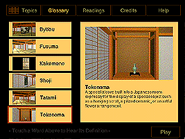

Arts of Japan
(c)
Location: Asian Galleries, 2nd floor
This program introduces you to the arts of Japan in a gallery that contains superb examples from the museum's permanent collection. Learn how artists conveyed information about their religion and culture by means of such traditional art forms as woodblock prints and painted screens. Tour an imaginary Japanese interior decorated with objects, screens and scrolls. An interactive glossary and reading list are also contained in the program.

Send comments to the webmaster.